我們提供比原廠更快速、更經濟實惠的汽車鑰匙解決方案
| 比較項目 | 一般原廠 4S 店 | 強匠鎖店 (推薦) |
|---|---|---|
| 等待時間 | 需預約，通常 7-14 天 | 現場完工，約 30-60 分鐘 |
| 拖吊需求 | 全丟需拖吊至保養廠 | 專人到場服務，免拖吊 |
| 配鎖價格 | 價格昂貴 (工資+材料) | 約原廠 30%-50% 價格 |
| 服務時間 | 僅限上班時間 | 24H 全天候緊急救援 |
無論是日系、歐系、美系車款，我們皆備有專業解碼設備
※ 若您的愛車未列在上方，歡迎直接 Line 詢問，我們將由專人為您查詢。
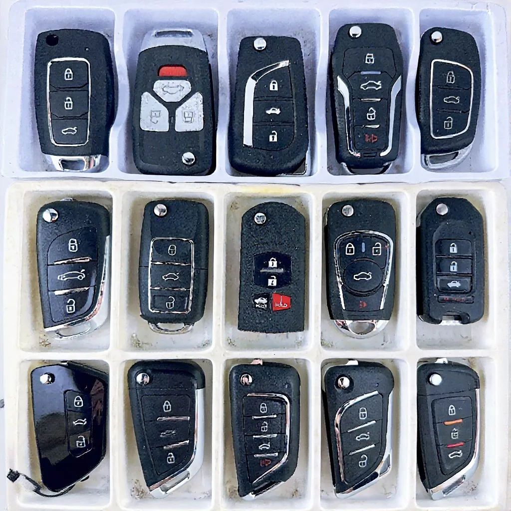
1拍下您的車鑰匙或行照，
傳送至官方 Line 取得精準報價。
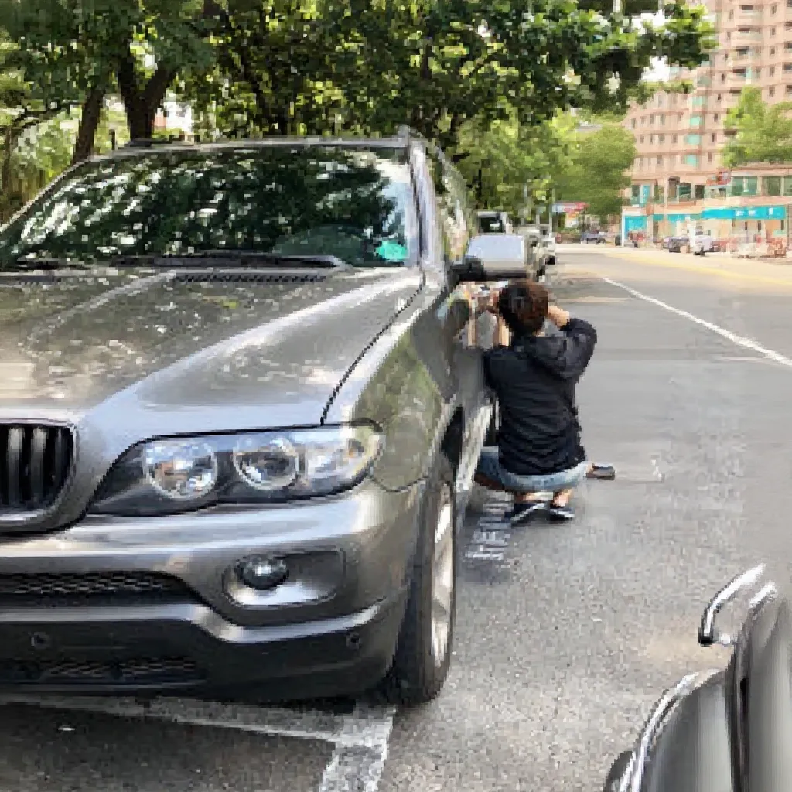
2確認報價後，技師攜帶設備前往現場。
平均約 30 分鐘即可完工。
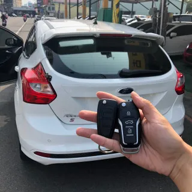
3現場測試鑰匙功能（發動、遙控）。
確認無誤後才收費，安心有保障。
強匠鎖店在地經營多年，專精 Mercedes-Benz, BMW, Audi, Lexus 及各大國產車系。 無論是鑰匙全丟、泡水故障、摺疊鑰匙改裝，我們都有豐富的現場救援經驗。 下方為我們在高雄各區（三民/左營/苓雅/前鎮）的真實施工案例。
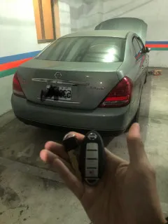
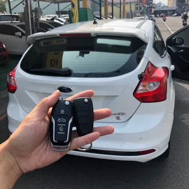
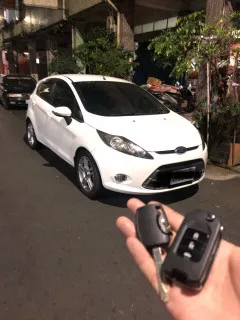
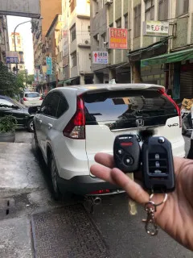
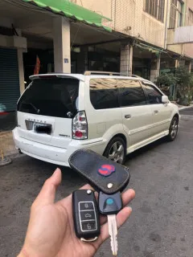
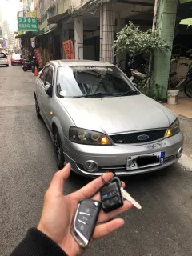
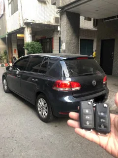
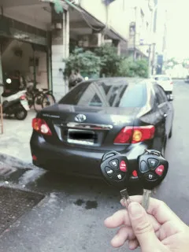
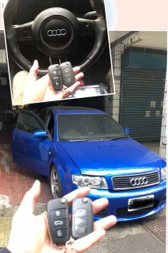
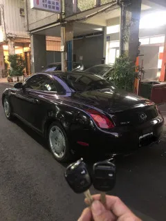
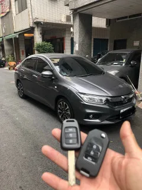
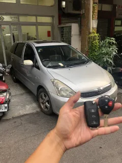
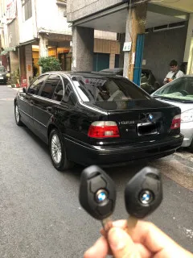
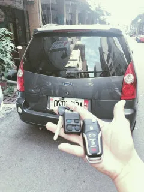
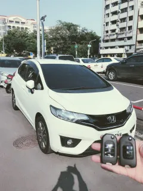
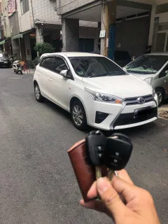
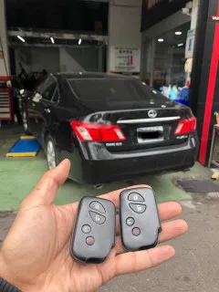
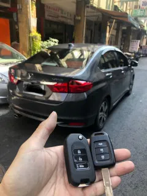
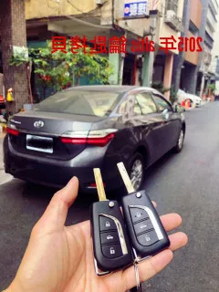
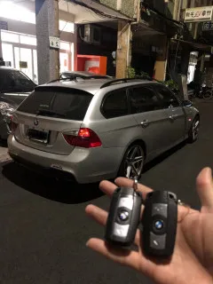
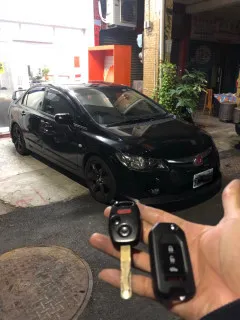
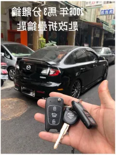
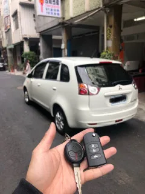
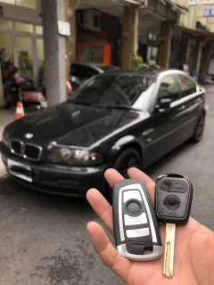
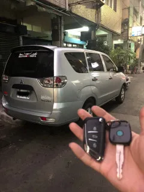
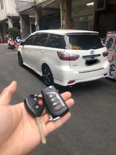
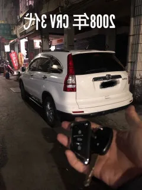
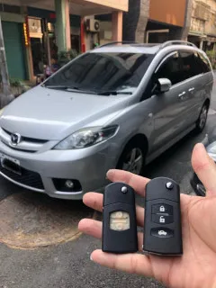
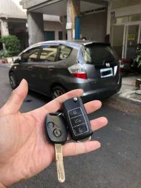
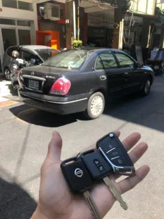
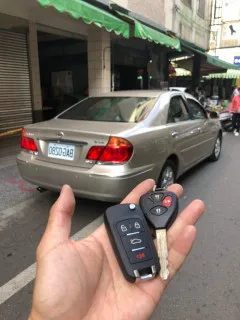
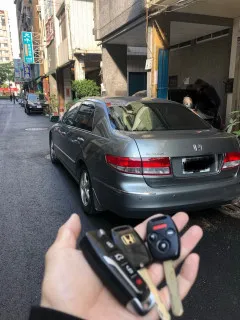
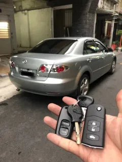
針對高雄車主最關心的汽車晶片鑰匙疑問，提供專業解答